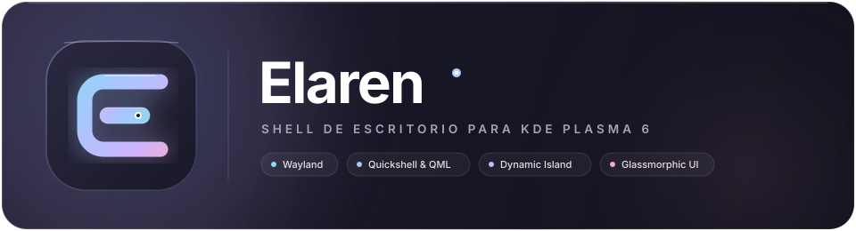
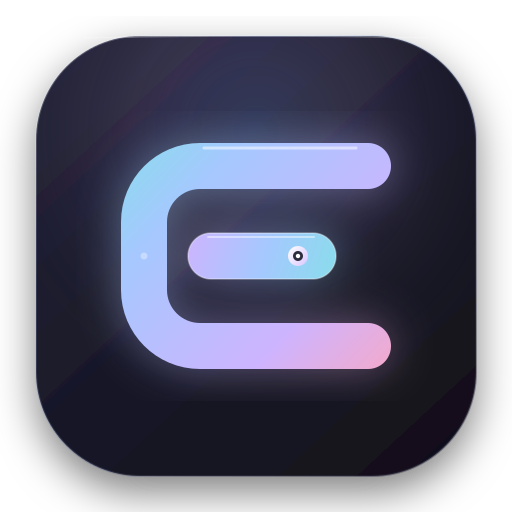

Logotipos vectoriales profesionales para KDE Plasma 6 (Wayland)


En lugar de dibujar una barra con widgets diminutos (que se vuelven borrosos a 32px), se sintetizó el concepto en una marca icónica pura y escalable.
La cinta exterior enmarca la inicial «E» de Elaren, mientras que la píldora central flotante evoca la isla de vidrio interactiva con su núcleo/avatar.
Reflejos de luz especular en el borde superior, bisel de 1.5px y resplandor difuso coherente con los paneles translúcidos de Quickshell.
Grosor de trazo uniforme (46px), radios tangentes (23px) y espaciado negativo exacto (44px) que garantiza armonía visual geométrica.
#A6C8FF · Ice Blue
#CDB4FF · Lavender
#89DCEB · Sky
#F5A9C9 · Flamingo
#1E1E2E · Base Dark